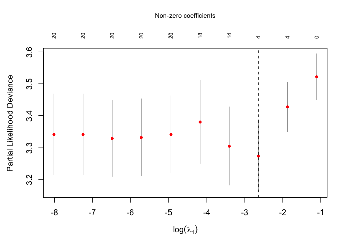
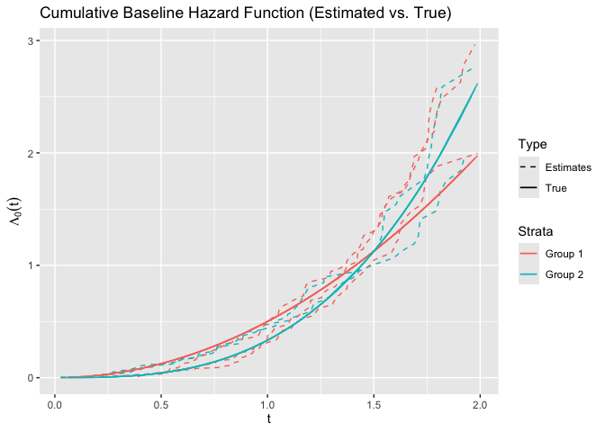

survtrans provides transfer learning for survival analysis using Cox proportional hazards models. It transfers survival information from source domain(s) to a target domain with three-layer penalization:
- Sparse (lambda1): variable selection on target coefficients
- Local (lambda2): shrinks source-target coefficient differences, encouraging shared effects
- Prior transfer (lambda3): incorporates prior knowledge about which source groups are informative via a customizable weight matrix
Installation
You can install the development version of survtrans with:
# install.packages("pak")
pak::pak("ziyangg98/survtrans")Example
Fit a transfer learning Cox model on simulated data with 5 groups (1 target + 4 sources, 20 features, true support on X1–X4):
library(survtrans)
formula <- Surv(time, status) ~ . - group - id
fit <- coxtrans(
formula, sim2, sim2$group, 1,
lambda1 = 0.075, lambda2 = 0.04, lambda3 = 0.04, penalty = "SCAD"
)
summary(fit)
#> Call:
#> coxtrans(formula = formula, data = sim2, group = sim2$group,
#> target = 1, lambda1 = 0.075, lambda2 = 0.04, lambda3 = 0.04,
#> penalty = "SCAD")
#>
#> n=500, number of events=422
#>
#> coef exp(coef) se(coef) z Pr(>|z|)
#> X1 0.34587 1.41322 0.05340 6.477 9.34e-11 ***
#> X2 0.35601 1.42762 0.05403 6.589 4.44e-11 ***
#> X3 0.34327 1.40956 0.05396 6.362 1.99e-10 ***
#> X4 0.32658 1.38622 0.05155 6.335 2.37e-10 ***
#> ---
#> Signif. codes: 0 '***' 0.001 '**' 0.01 '*' 0.05 '.' 0.1 ' ' 1
#> exp(coef) exp(-coef) lower .95 upper .95
#> X1 1.4132 0.7076 1.2728 1.5691
#> X2 1.4276 0.7005 1.2842 1.5871
#> X3 1.4096 0.7094 1.2681 1.5668
#> X4 1.3862 0.7214 1.2530 1.5336
#>
#> Feature structure:
#> Prior transfer: X1, X2
#> Shared (local): X3, X4
#> Sparse (zero) : 16 features (X5, X6, X7, ...)The model correctly identifies the three-layer structure: X1 and X2 are transferred via the prior constraint, X3 and X4 are shared across all groups via local shrinkage, and X5–X20 are sparse (zero).
Custom prior matrix
When source groups have known structure (e.g., tissue type), you can define a prior matrix to encode which sources are informative for the target:
pm <- rbind(
tissue_A = c(0.5, 0.5, 0, 0),
tissue_B = c(0, 0, 0.5, 0.5)
)
colnames(pm) <- c("2", "3", "4", "5")
fit2 <- coxtrans(
formula, sim2, sim2$group, 1,
lambda1 = 0.075, lambda2 = 0.04, lambda3 = c(0.04, 0.04),
prior_matrix = pm, penalty = "SCAD"
)
summary(fit2)
#> Call:
#> coxtrans(formula = formula, data = sim2, group = sim2$group,
#> target = 1, lambda1 = 0.075, lambda2 = 0.04, lambda3 = c(0.04,
#> 0.04), prior_matrix = pm, penalty = "SCAD")
#>
#> n=500, number of events=422
#>
#> coef exp(coef) se(coef) z Pr(>|z|)
#> X1 0.34289 1.40901 0.06213 5.519 3.40e-08 ***
#> X2 0.35743 1.42965 0.06567 5.443 5.24e-08 ***
#> X3 0.34416 1.41081 0.05408 6.364 1.96e-10 ***
#> X4 0.32464 1.38354 0.05097 6.370 1.90e-10 ***
#> ---
#> Signif. codes: 0 '***' 0.001 '**' 0.01 '*' 0.05 '.' 0.1 ' ' 1
#> exp(coef) exp(-coef) lower .95 upper .95
#> X1 1.4090 0.7097 1.2475 1.5915
#> X2 1.4296 0.6995 1.2570 1.6260
#> X3 1.4108 0.7088 1.2689 1.5685
#> X4 1.3835 0.7228 1.2520 1.5289
#>
#> Feature structure:
#> Prior [tissue_A,tissue_B]: X1, X2
#> Shared (local) : X3, X4
#> Sparse (zero) : 16 features (X5, X6, X7, ...)Automatic tuning
cv.coxtrans() selects all three penalty parameters jointly via K-fold cross-validation over a full lambda1 × lambda2 × lambda3 grid, minimising the held-out partial likelihood deviance (lambda.min rule, consistent with glmnet). It returns a cv.coxtrans object with CV diagnostics and the final refitted model.
cv_fit <- cv.coxtrans(
formula, sim2, sim2$group, target = 1, penalty = "SCAD", ncores = 8
)
cv_fit
#> cv.coxtrans
#>
#> Call: cv.coxtrans(formula = formula, data = sim2, group = sim2$group,
#> target = 1, penalty = "SCAD", ncores = 8)
#>
#> Measure: Partial Likelihood Deviance
#>
#> lambda.min: l1=0.0713 l2=0.0559 l3=0.2154
#> CV deviance: 3.2737 (+/- 0.1128)
#> Non-zero: 4 (target group)The CV curve along the lambda1 axis (with lambda2 and lambda3 fixed at their optimal values) can be visualised with plot():
plot(cv_fit)
Access the final fitted model and its summary via $coxtrans.fit:
summary(cv_fit$coxtrans.fit)
#> Call:
#> coxtrans(formula = formula, data = data, group = group, target = target,
#> lambda1 = lambda_min$lambda1, lambda2 = lambda_min$lambda2,
#> lambda3 = lambda_min$lambda3, prior_matrix = prior_matrix,
#> penalty = penalty)
#>
#> n=500, number of events=422
#>
#> coef exp(coef) se(coef) z Pr(>|z|)
#> X1 0.33651 1.40006 0.05321 6.324 2.54e-10 ***
#> X2 0.35245 1.42255 0.05377 6.554 5.59e-11 ***
#> X3 0.34137 1.40687 0.05398 6.324 2.54e-10 ***
#> X4 0.32244 1.38050 0.05138 6.276 3.48e-10 ***
#> ---
#> Signif. codes: 0 '***' 0.001 '**' 0.01 '*' 0.05 '.' 0.1 ' ' 1
#> exp(coef) exp(-coef) lower .95 upper .95
#> X1 1.4001 0.7143 1.2614 1.5540
#> X2 1.4226 0.7030 1.2803 1.5807
#> X3 1.4069 0.7108 1.2656 1.5639
#> X4 1.3805 0.7244 1.2482 1.5268
#>
#> Feature structure:
#> Prior transfer: X1, X2
#> Shared (local): X3, X4
#> Sparse (zero) : 16 features (X5, X6, X7, ...)Baseline hazard
library(ggplot2)
basehaz_pred <- basehaz(fit)
basehaz_pred$color <- ifelse(
as.numeric(basehaz_pred$strata) %% 2 == 0, "Group 2", "Group 1"
)
ggplot(
basehaz_pred,
aes(
x = time,
y = basehaz,
group = strata,
color = factor(color),
linetype = "Estimates"
)
) +
geom_line() +
geom_line(
aes(x = time, y = time^2 / 2, color = "Group 1", linetype = "True")
) +
geom_line(
aes(x = time, y = time^3 / 3, color = "Group 2", linetype = "True")
) +
labs(
title = "Cumulative Baseline Hazard Function (Estimated vs. True)",
x = expression(t),
y = expression(Lambda[0](t))
) +
scale_linetype_manual(values = c("Estimates" = "dashed", "True" = "solid")) +
guides(
color = guide_legend(title = "Strata"),
linetype = guide_legend(title = "Type")
)